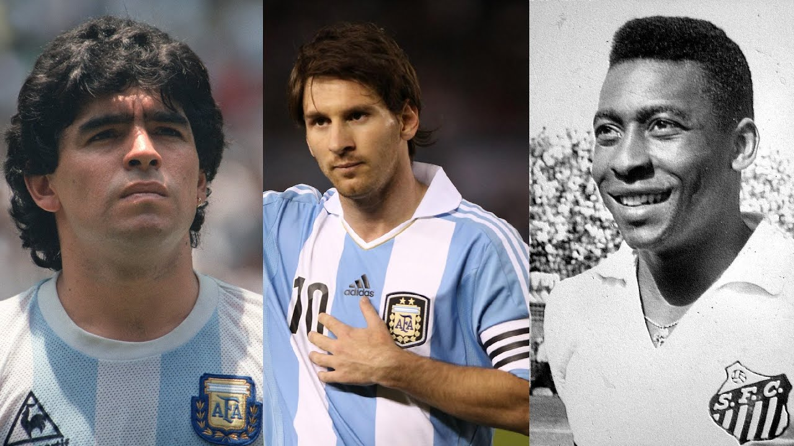

Estrellas del Fútbol
Jugadores legendarios y su camino al éxito
El fútbol ha dado al mundo jugadores legendarios que han marcado generaciones. A través de disciplina, talento y estrategias personales, muchos de ellos han dejado una huella imborrable en la historia del deporte.
Jugadores destacados
- Lionel Messi: Perseverancia, entrenamiento técnico, y una visión única del campo. Formado en La Masía del FC Barcelona.
- Cristiano Ronaldo: Trabajo físico intensivo, mentalidad competitiva y liderazgo. Siempre enfocado en la mejora continua.
- Pelé: Talento natural y amor por el juego. Debutó a los 15 años y deslumbró al mundo con su estilo alegre y ofensivo.
- Diego Maradona: Creatividad, astucia y control del balón. Su visión y habilidad lo hicieron una leyenda, especialmente por su desempeño en 1986.
- Zinedine Zidane: Elegancia en el juego, inteligencia táctica y capacidad para controlar el ritmo de los partidos.
Estrategias comunes hacia el éxito
| Estrategia | Aplicación |
|---|---|
| Entrenamiento diario | Todos los jugadores exitosos entrenan constantemente, incluso fuera de temporada. |
| Disciplina mental | La concentración y la resiliencia son claves para manejar la presión y los fracasos. |
| Alimentación y descanso | Cuidan su cuerpo al máximo con dietas estrictas y rutinas de sueño. |
| Adaptabilidad táctica | Se adaptan a distintas posiciones, equipos y estilos de juego según el momento. |
Impacto en el fútbol y la sociedad
Estos jugadores no solo han brillado en el campo, sino que han influido en millones de personas alrededor del mundo. A través de campañas benéficas, academias de fútbol y presencia en medios, se han convertido en modelos a seguir dentro y fuera del deporte.
Actualmente, muchos de ellos participan en proyectos sociales, promueven la inclusión en el deporte y apoya